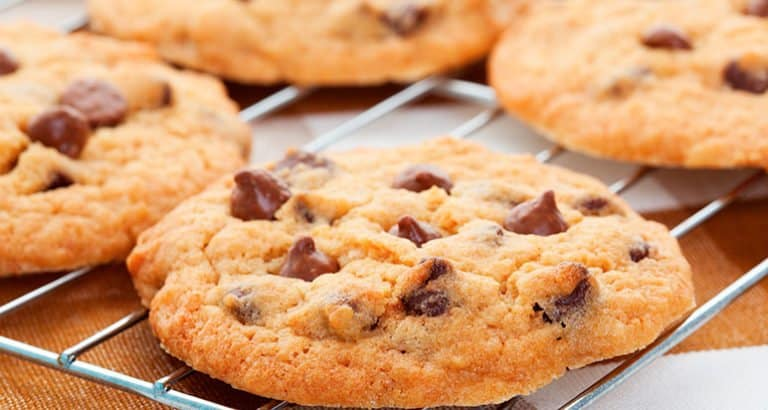

Cookie

Cookie para o café da tarde!
Ingredientes
- 125g de manteiga sem sal
- 3/4 de xícara de açúcar
- 1/2 de xícara de açúcar mascavo
- 1 ovo
- 1 e 3/4 de xícara de trigo
- 1 colher de chá de fermento em pó
- 300g de chocolate meio amargo picado
- 1 colher de chá de essência de baunilha
Preparo
- Misture a manteiga, açúcar mascavo, açúcar, essência de baunilha
- Adicione o ovo batigo aos poucos e misture bem
- Acrescente a farinha aos poucos e misture bem
- Adicione o fermento e misture só para incorporá-lo à massa
- Adicione o chocolate picado
- Forme bolinhas pequenas e asse em forno pré-auqecido, sobre papel manteiga, por aproxidamente 15 a 20 minutos (250º)